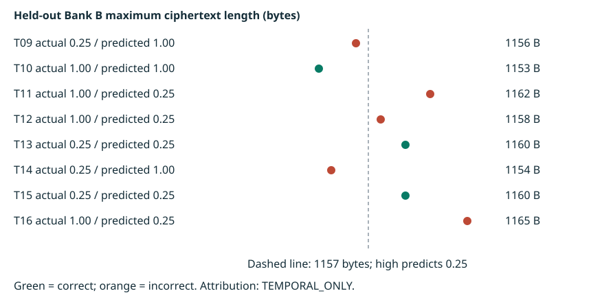

RAYLS RESEARCH · OCTOBER WEEK 4
Can Hub ciphertext lengths infer transfer amounts?
An original held-out test of amount inference from Hub ciphertext lengths: 16 randomized trials with saved settlement audits and eight frozen predictions.
Environment and runtime provenance
Creator-produced local historical records, checked offline. Exact source-to-runtime mapping remains unverified. No live chain health or production/Mainnet claim.
| Identity | Available evidence | Limit |
|---|---|---|
| Captured Node / Git | v24.19.0 / git version 2.53.0.windows.3 | Capture 2026-10-25T17:22:52.883Z; not deployment versions |
| npm / Docker / Compose | npm unavailable on captured PATH; Docker/Compose unqueried | Historical versions unknown |
| Contracts checkout | ed8863885c8ed5d5d317d47a34c063907192687a | Preexisting modifications; deployed build mapping unverified |
| Relayer checkout | b01b427de4cfc2ac66e75eba0d5070b73a3b137c | Preexisting modifications; image digest unverified |
| Saved token runtime | 19180 bytes; 0xdd49dd0790db65e210bf52c01e684fbe2a8e2c2d82dd33d8177f43d67e4c8aaa | Saved audit, not a fresh code query or pinned-source rebuild |
Full version/configuration matrix · Captured host metadata
Contract and token identities
Bank A token: 0xaB7B4c595d3cE8C85e16DA86630f2fc223B05057
EnygmaTeleport (Hub): 0xf5059a5D33d5853360D16C683c16e67980206f36
Hub token registry: 0xc0F115A19107322cFBf1cDBC7ea011C19EbDB4F8
Bank A token registry: 0x8f86403A4DE0BB5791fa46B8e795C547942fE4Cf
Token resource ID: 0x290decd9548b62a8d60345a988386fc84ba6bc95484008f6362f93160ef3e563
Saved token runtime hash: 0xdd49dd0790db65e210bf52c01e684fbe2a8e2c2d82dd33d8177f43d67e4c8aaa
Method
Eight training and eight held-out trials used balanced classes of 0.25 and 1.00. A maximum Bank B ciphertext length ≥1157 bytes predicts 0.25; otherwise 1.00. The model was selected from training data, rather than specified in the original preregistration. It was not refitted after freezing. Feature calculation uses Hub metadata, excluding recipient balances and private-network amount labels. Trial windows are associated using saved experimental records.
Held-out evidence
| Trial | Actual | Prediction | Bytes | Outcome |
|---|---|---|---|---|
| T09 | 0.25 | 1.00 | 1156 | Incorrect |
| T10 | 1.00 | 1.00 | 1153 | Correct |
| T11 | 1.00 | 0.25 | 1162 | Incorrect |
| T12 | 1.00 | 0.25 | 1158 | Incorrect |
| T13 | 0.25 | 0.25 | 1160 | Correct |
| T14 | 0.25 | 1.00 | 1154 | Incorrect |
| T15 | 0.25 | 0.25 | 1160 | Correct |
| T16 | 1.00 | 0.25 | 1165 | Incorrect |

The exact test enumerates 70 balanced label assignments with predictions fixed: 65 achieve at least the observed correct count (one-sided p = 65/70). Two-sided testing uses inclusive absolute distance from the null mean of 4 correct; all 70/70 assignments meet that tail criterion, giving p = 1.000000.
Provenance reconciliation
Cumulative: 160 events / 40 batches. Randomized: 128 / 32. Earlier: 32 / 8, exactly matching the pre-randomization snapshot by event identity and ciphertext hash.
- Initial observer snapshot: setup / first-transfer period; exact causal allocation unresolved: 16 events / 4 batches; Hub blocks 15943–17318.
- Pilot 01 temporal increment: 8 events / 2 batches; Hub blocks 23147–23150.
- Pilot 02 temporal increment: 8 events / 2 batches; Hub blocks 24592–24595.
Limitations
Eight held-out observations provide limited precision and power. This study evaluates one classifier in one local deployment. Saved declarations and hash links verified; independent pre-unblinding timestamp attestation unavailable. SHA-256 manifests detect changes relative to this package; they do not establish independent timestamps or authorship.
16-trial transaction audit
Structured saved-audit checks passed. Receipt-status fields remain “not captured”; reference statuses are separate. Before/after balances and full raw receipts are not available per trial. Hub association is TEMPORAL_ONLY.
Full JSON with evidence SHA-256 · CSV · Verification levels and missing fields
| Trial | Source / mint blocks | Source TX / mint TX | Reference states | Max bytes | Prediction / actual | Evidence |
|---|---|---|---|---|---|---|
| T01 | A 44684 B 44705 | 0x46b5b32027…28d2ba0xa7ac0b6562…5ba9cb | legacy 1 / legacy 2 | 1158 | training / not released | Saved audit |
| T02 | A 45745 B 45781 | 0x4ac457a1e1…a583240x5832eed43c…519dba | 1 / 2 | 1157 | training / not released | Saved audit |
| T03 | A 47834 B 47870 | 0x34cb191356…1456150xca123822ca…de50dc | 1 / 2 | 1162 | training / not released | Saved audit |
| T04 | A 50574 B 50593 | 0x635a25146d…dc08860xbcbcbb8443…4c05ea | 1 / 2 | 1153 | training / not released | Saved audit |
| T05 | A 50925 B 50929 | 0xffbaa6f44e…ef95010x767022854b…bc1319 | 1 / 2 | 1159 | training / not released | Saved audit |
| T06 | A 51241 B 51245 | 0x7c7d764705…8a08f60xfd4abe1673…2437ff | 1 / 2 | 1159 | training / not released | Saved audit |
| T07 | A 52234 B 52248 | 0x78fdf9b77e…f8908f0x204baf11be…d11574 | 1 / 2 | 1161 | training / not released | Saved audit |
| T08 | A 52703 B 52715 | 0xdcd18aa1f9…94ebcf0x61da571e67…a67802 | 1 / 2 | 1156 | training / not released | Saved audit |
| T09 | A 58341 B 58397 | 0xaf3f377ee7…f8fe890x63aba99c89…1d9202 | 1 / 2 | 1156 | 1.00 / 0.25 | Saved audit |
| T10 | A 60160 B 60218 | 0xbff60f4610…1ae8270x1094c395d9…0e3fc5 | 1 / 2 | 1153 | 1.00 / 1.00 | Saved audit |
| T11 | A 61378 B 61429 | 0xaa1d8f5da0…54f7700x5ba3054faa…06a4a2 | 1 / 2 | 1162 | 0.25 / 1.00 | Saved audit |
| T12 | A 62535 B 62553 | 0x0ff62d715d…e279be0xe42d27e8bb…93db17 | 1 / 2 | 1158 | 0.25 / 1.00 | Saved audit |
| T13 | A 64735 B 64720 | 0xb3e7f604ba…7be7650xa4e809661a…3666d2 | 1 / 2 | 1160 | 0.25 / 0.25 | Saved audit |
| T14 | A 67934 B 67948 | 0x33b479896a…e67d1a0x9cbd75e66b…fa6522 | 1 / 2 | 1154 | 1.00 / 0.25 | Saved audit |
| T15 | A 69247 B 69266 | 0xc31d7c7371…8fb29f0xecb07b6414…3a6f2a | 1 / 2 | 1160 | 0.25 / 0.25 | Saved audit |
| T16 | A 76304 B 76285 | 0x25f1d1b1b5…00d3fe0x5ceab35454…dedff3 | 1 / 2 | 1165 | 0.25 / 1.00 | Saved audit |
Reproduce and inspect
Inspect the saved observations, audit joins and exact statistical calculation, or run the standalone verifier without chain access.